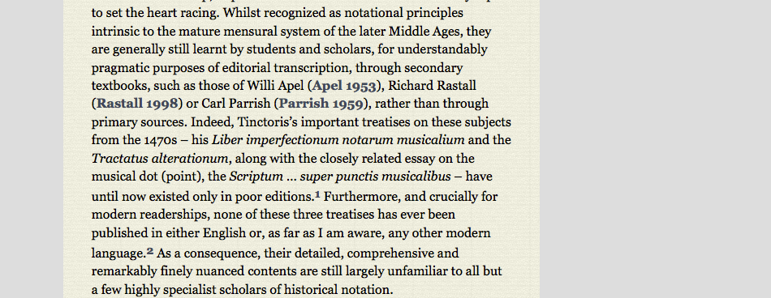

Articles and other information pages: Bibliographic references
Bibliographic citations are presented in a standard (author year) format. Hovering over any one of these makes a fuller reference appear in the right-hand margin.

Bibliographic citations are presented in a standard (author year) format. Hovering over any one of these makes a fuller reference appear in the right-hand margin.